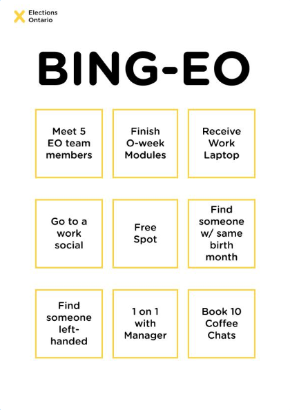

BING-EO: Reimagining the Internship Experience at Elections Ontario
Purpose:
How might we design an internship experience that supports both intern growth and organizational evaluation? This question guided our future-state service design project for Elections Ontario. Working in a multidisciplinary team, we explored the challenges interns face throughout their work term. Our goal was to design a more structured, motivating, and human-centred internship journey that balances learning, autonomy, and meaningful contribution.
Goals:
- Create a more engaging and supportive internship experience from onboarding to offboarding
- Improve clarity, feedback, and structure throughout the internship journey
- Encourage intern autonomy, motivation, and ownership over learning
- Help Elections Ontario better evaluate intern growth, participation, and long-term potential
Approach:
Our team used service design methods including journey mapping, co-design, storyboarding, and iterative prototyping. We began by unpacking the client brief and identifying tensions between intern needs and organizational priorities. Through interviews, research synthesis, and current-state journey mapping, we identified recurring pain points such as information overload during onboarding, inconsistent feedback, and a lack of meaningful engagement over time.
We explored multiple concept directions before refining our final proposal into a continuous service system rather than a one-time onboarding intervention. User feedback played a major role in shaping the experience, particularly around motivation, rewards, and personalization.
Interventions
BING-EO Onboarding Card
A task-based onboarding tool introduced during orientation that guides interns through early workplace exploration, expectation setting, and connection building. The card encourages participation through structured activities that continue throughout the internship journey.

Personalized Learning Journey
Interns can choose between a simple tracking system or a more gamified experience with points, badges, and rewards. This flexibility allows users to engage in a way that feels motivating without creating unnecessary competition or pressure.
Simplified tracking system.
Gamified internship experience.
Challenges:
One of the biggest challenges was balancing the needs of two different stakeholder groups: interns and Elections Ontario. Interns wanted autonomy, validation, and engaging work, while the organization needed consistency, evaluation, and retention. Designing a system that addressed both perspectives without overcomplicating the experience required significant iteration.
Another challenge involved defining the right level of gamification. Early concepts leaned too heavily into competitive systems, but user feedback revealed that many interns preferred focusing on personal growth rather than competing against peers. This pushed us to redesign the experience around self-progress, flexibility, and optional engagement styles.
Outcomes:
Our final proposal transformed the internship experience from a fragmented onboarding process into a continuous service journey that supports interns across their full work term. The project resulted in three interconnected service prototypes that addressed both frontstage and backstage experiences, including onboarding, progress tracking, feedback systems, and supervisor support.
Reflections:
This project reinforced how meaningful experiences are shaped by both emotional and operational design decisions. One of my biggest takeaways was learning how to design for motivation without relying on competition. Creating flexible pathways for engagement allowed us to prioritize inclusivity and individual growth while still maintaining structure and accountability.
I also gained a deeper appreciation for backstage service design and the role organizational systems play in shaping user experiences. Designing the supervisor dashboard challenged me to think beyond the intern perspective and consider how internal workflows, feedback structures, and evaluation processes influence the success of the overall service.